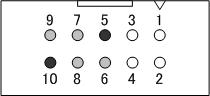
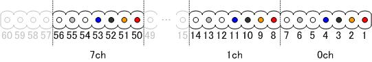
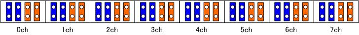
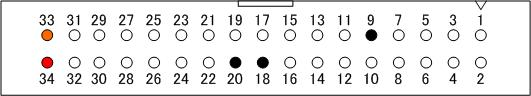
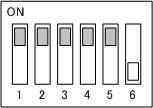
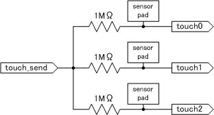

1番ピン 汎用デジタル入力：ユーザー入力1（コントローラ内部で5Vにプルアップ）
2番ピン 汎用デジタル入力：ユーザー入力2（コントローラ内部で5Vにプルアップ）
3番ピン 汎用デジタル入力：ユーザー入力3（コントローラ内部で5Vにプルアップ）
4番ピン 汎用デジタル入力：ユーザー入力4（コントローラ内部で5Vにプルアップ）
5番ピン GND
6番ピン オープン （※内部情報 ADC_CS# 3.3V LVCMOS もしくは touch0）
7番ピン オープン （※内部情報 ADC_DIN 3.3V LVCMOS もしくは touch1）
8番ピン オープン （※内部情報 ADC_SCLK 3.3V LVCMOS もしくは touch2）
9番ピン オープン （※内部情報 ADC_DOUT 3.3V LVCMOS もしくは touch_send）
10番ピン GND
（汎用デジタル入力はコントローラ内部で5Vにプルアップされています。GNDに接続することで、値が変化(0->1)します。）
6番ピンから9番ピンは，利用しないときは必ずオープンにしてください。それ以外ですとコントローラを破損することがあります。
※フラットケーブルはAWG28を推奨
（※内部情報 ） 6番ピンから9番ピンの4本の信号線は拡張のA/Dコンバータと静電容量式のタッチスイッチが基板内部でマルチプレクスされています．
DIPスイッチの設定でA/Dコンバータとタッチスイッチを切り替えることができます．（※2011/08/24以降のFPGAのROMから対応．）
8ch,12bit,A/Dコンバータ(AD7928)を接続するシリアルインタフェースを6番ピン〜9番ピンに接続可能です。
電源は34ピン拡張I/Oの33番ピン（信号線駆動用 3.3V）、34番ピン（ADC電源用 5V）を利用してください。
※271107は220429（RE-max24 EBCLL 6.5W SL 2WE）と201940（tacho MR 512IMP 3K 32P ASIC）の組み合わせ番号です．

1番ピン モータ(＋極)
2番ピン Vcc（5[V], ロータリーエンコーダ用）
3番ピン GND（ロータリーエンコーダ用）
4番ピン モータ(−極)
5番ピン ロータリーエンコーダA相
6番ピン オープン
7番ピン ロータリーエンコーダB相
8番ピン以降はこの順序の繰り返しで0ch〜7chまで計56ピンの信号線
57ピン〜60ピンまでの4本はオープン
（1番ピンは基板側60ピンコネクタに▲マークの付いている側です。）
※フラットケーブルはAWG28を推奨

（図のピンは、基板を電源接続ジャック、USBジャックを下向きとして見た場合の配置）
それぞれのモータ出力チャンネルに対して、
・2つのジャンパピンを両方青色の位置のピンにすると正転方向
・2つのジャンパピンを両方オレンジ色の位置のピンにすると逆転方向
となります。
青色の位置とオレンジの位置を混ぜてジャンパピンを接続しないでください。ショートしてコントローラが壊れます。
ジャンパピン接続変更の際は基板上の他の素子などを傷つけたりストレスがかからないように注意してください。
※ジャンパピンは3A以上流せるものを推奨

1番ピン〜 4番ピン オープン（FPGA_RD）
5番ピン〜 8番ピン オープン（FPGA_WR）
9番ピン GND
10番ピン〜17番ピン オープン（FD）
18番ピン GND
19番ピン オープン（IFCLK）
20番ピン GND
21番ピン オープン（SLWR）
22番ピン オープン（SLRD）
23番ピン〜30番ピン オープン
31番ピン オープン（FIFOADR1）
32番ピン オープン（SLOE）
33番ピン 3.3V
34番ピン 5V
（1番ピンは基板側34ピンコネクタに▲マークの付いている側です。）
※フラットケーブルはAWG28を推奨
本コントローラは、初期の機能設定のために6chのDIPスイッチが基板上にあります。
このDIPスイッチは起動時に変更しないでください。
変更するときは必ず電源を切ってから行ってください。
基板が破損する可能性があります。

1番ピン コントローラチャンネル設定0(デフォルト:ON側)
2番ピン コントローラチャンネル設定1(デフォルト:ON側)
3番ピン コントローラターミナル設定 (デフォルト:ON側)
4番ピン 拡張ADC(値:OFF側)と3chタッチセンサ(値:ON側)の切り替え(デフォルト:ON側)
5番ピン 電流制限回路（有効:ON側，無効:OFF側）(デフォルト:ON側)
6番ピン ダミー(デフォルト:OFF側)
※注意
ON側のときソフトウェアにより得られる値は0です．
OFF側のときソフトウェアにより得られる値は1です．
本コントローラは、静電容量式のタッチスイッチを3ch内蔵しています．
汎用のユーザ入力端子の10ピンのうち6番ピンから9番ピンの 4本の信号線は拡張のADCと基板内部でマルチプレクスされています．
DIPスイッチの設定でADCとタッチスイッチを切り替えることができます．
この端子により得られるセンサ値は、本ソフトウェアにより値を取得することが可能です。
タッチすることでタッチしていない時よりも大きな値が得られます．
静電容量式のタッチセンサの推奨回路図

パッドは導電性のパッド（金属箔など）を利用してください．
配線の長さやパッドの材質，形状，接触状態などによって得られる値が異なります．
デジタルスイッチとして利用する場合，適切なスレッショルドを設定してください．
タッチセンサに利用する信号線：汎用ユーザ入力端子（10ピン）
6番ピン 静電容量タッチスイッチ0 touch0
7番ピン 静電容量タッチスイッチ1 touch1
8番ピン 静電容量タッチスイッチ2 touch2
9番ピン 静電容量タッチスイッチ信号出力 touch_send